8 Mixed-Precision Iterative Refinement
9 Introduction
Modern hardware supports several floating-point formats with different costs, accuracy, and numerical ranges. Low precision can increase throughput and reduce memory traffic and energy consumption, but it also introduces larger rounding errors. Mixed-precision algorithms combine multiple formats to obtain some of the efficiency of low precision while retaining higher-precision accuracy (Higham and Mary 2022).
This report studies mixed-precision iterative refinement for nonsingular linear systems using low precision for LU factorization and higher precision for refinement. Numerical experiments assess convergence and accuracy across precision triples and condition numbers. The study focuses on convergence, attainable accuracy, and iteration counts, rather than wall-clock performance. Several low- and high-precision formats are emulated or implemented in software, so measured runtimes would not represent performance on hardware with native support for these formats.
10 Three-precision iterative refinement
10.1 Algorithm
The implemented method is LU-based three-precision iterative refinement (Higham and Mary 2022):
Algorithm 1 summarizes the core three-precision method. Our implementation extends the core algorithm with optional residual scaling for limited-range formats, configurable robustness checks, optional iterate histories, optional residual diagnostics, and descriptive termination statuses.
10.2 Precision roles and theoretical expectations
The three precisions control different aspects of iterative refinement. The factorization precision \(u_f\) determines the quality of the LU factors and primarily limits convergence. The working precision \(u\) is used for the iterates and updates and sets the target accuracy. The residual precision \(u_r\) determines how accurately the residual is computed and influences the attainable forward error.
For a stable low-precision factorization, convergence is expected when
\[ \kappa(A)u_f \ll 1. \]
Thus, \(u_f^{-1}\) defines an approximate condition-number scale, denoted by
\[ \kappa_* = u_f^{-1}. \]
This is not a strict boundary: the actual convergence rate also depends on LU growth, factorization quality, componentwise conditioning, and norm-dependent constants. Higham and Mary (2022).
Under suitable convergence conditions, refinement produces a normwise backward error of order \(u\). The limiting relative forward error satisfies approximately
\[ \frac{\lVert \widehat{x}-x\rVert_\infty} {\lVert x\rVert_\infty} \lesssim u+4pu_r\operatorname{cond}(A,x), \]
If \(u_r=u\), the condition-dependent term generally limits the attainable forward accuracy. If \(u_r\) is sufficiently smaller than \(u\), this term becomes negligible and forward errors of order \(u\) can be attained. Carson and Higham (2018, Corollary 3.3).
11 Experimental setup
All experiments use the same framework for problem construction, iterative refinement, error evaluation, and result recording. Individual experiment groups vary only the condition numbers, precision configurations, and algorithmic options required for their objectives.
11.1 Configuration and common settings
Table 11.1 summarizes the settings shared across the experiments. Unless stated otherwise, all runs use these values. Experiment-specific variations are described in the corresponding results sections.
| Parameter | Common setting |
|---|---|
| Matrix family | Dense random SPD |
| Dimension | \(n=100\) |
| Right-hand side | \(b_i\sim\mathcal{N}(0,1)\) in FP64 |
| Random seeds | \(42\) for matrix construction; \(2718\) for the right-hand side |
| Working precision | FP64 |
| Reference and measurement precision | FP256 |
| Maximum iterations | \(20\) |
| Divergence detection | Enabled; growth factor \(10\) over three consecutive steps |
| Residual scaling | Enabled |
| Iterate histories | Enabled |
| Residual diagnostics | Disabled |
The condition numbers and precision triples vary between experimental groups. Residual scaling normalizes the residual before conversion to the factorization precision and rescales the computed correction. It is disabled only for the scaled-unscaled comparison and is discussed later under Low-precision limitations and residual scaling.
11.2 Test problems
The experiments use dense random-SPD matrices of the form
\[ A = Q\Lambda Q^T, \]
where \(Q\) is orthogonal and \(\Lambda\) is chosen to produce the prescribed condition number \(\kappa_2(A)\). Right-hand sides are sampled in FP64 from the standard normal distribution. An FP256 solve of the stored system provides the reference solution.
The generator also supports rotated-SPD and nonsymmetric random-SVD matrices, together with all-ones and random-sign solution modes.
11.3 Precision formats
The experiments use the following formats:
| Format | Implementation | Significand bits | Unit roundoff |
|---|---|---|---|
| bfloat16 | CPFloat<8, 8> |
8 | \(2^{-8}\) |
| FP16 | CPFloat<11, 5> |
11 | \(2^{-11}\) |
| FP32 | float |
24 | \(2^{-24}\) |
| FP64 | double |
53 | \(2^{-53}\) |
| FP128 | FP<64> |
64 | \(2^{-64}\) |
| FP256 | FP<192> |
192 | \(2^{-192}\) |
CPFloat simulates bfloat16 and FP16, while GMP provides the extended-precision formats. FP128 and FP256 are project labels for FP<64> and FP<192> and do not denote the corresponding IEEE formats. The main experiments use FP64 working precision. Each experiment specifies its factorization and residual precisions.
For FP64 working precision, \(u^2=2^{-106}\), whereas the implemented FP128 format has \(u_r=2^{-64}\). The FP128-residual experiment therefore does not realize the commonly analyzed choice \(u_r=u^2\), although it uses a residual precision higher than the working precision. The general forward-error bound remains applicable, but the attainment of \(O(u)\) forward error is evaluated empirically.
11.4 Error measures
For each iterate, we compute
\[ \begin{aligned} e_i &= \frac{\lVert x_i-x_{\mathrm{ref}}\rVert_\infty} {\lVert x_{\mathrm{ref}}\rVert_\infty}, \\ \eta_i &= \frac{\lVert b-Ax_i\rVert_\infty} {\lVert A\rVert_\infty\lVert x_i\rVert_\infty +\lVert b\rVert_\infty}. \end{aligned} \]
The forward error \(e_i\) and the normwise backward error \(\eta_i\) are both evaluated in FP256.
11.5 Termination criteria and statuses
Convergence is determined by the relative correction
\[ \rho_i=\frac{\lVert d_i\rVert_2}{\lVert x_i\rVert_2}. \]
Refinement terminates with status converged when \(\rho_i < u\). Otherwise, it returns max_iterations after 20 iterations, factorization_input_non_finite if \(A\) or \(b\) is non-finite after conversion to the factorization precision, non-finite if a non-finite value appears later, or diverged if the correction norm grows by more than a factor of \(10\) for three consecutive iterations. The iteration limit, growth factor, and required number of consecutive growth steps are configurable.
11.6 Experimental framework and reproducibility
Each run records its precision configuration, requested condition numbers, random seeds, termination status, and experiment-specific quantities. Fixed seeds and self-describing CSV files permit the experiments to be repeated and the figures to be regenerated independently.
12 Experimental design
We conducted five groups of experiments to examine how conditioning, precision choices, and residual handling affect the convergence and accuracy of mixed iterative refinement. Unless stated otherwise, they use the common setup described above and vary only the parameters relevant to their objective. Table 12.1 summarizes each group’s purpose, varied parameters, and recorded quantities.
| Experimental group | Parameters varied | Quantities recorded | Purpose |
|---|---|---|---|
| Convergence histories | Representative \(\kappa_2(A)\) values and precision triples | Per-iteration forward error, backward error, relative correction; final status | Examine behavior below, near, and above \(\kappa_2(A)u_f=1\). |
| Condition-number sweep | \(\kappa_2(A)\) and precision triple | Final forward error, iteration count, final status | Determine how conditioning affects convergence and accuracy. |
| Residual-precision comparison | \(\kappa_2(A)\) and residual precision | Final forward and backward errors, final status | Measure the benefit of higher residual precision. |
| Direct-solve comparison | \(\kappa_2(A)\) and solution method | Final forward and backward errors, final status | Compare mixed IR with a direct working-precision solve. |
| Residual-scaling experiments | Residual scaling enabled or disabled | Error histories and conversion diagnostics | Determine whether scaling prevents residual information loss. |
13 Results and discussion
13.1 Convergence histories
In this experimental group \(u_f\), \(u_r\) and \(\kappa(A)\) are varied; \(u\) and other common settings remain fixed. For each configuration, the forward error, backward error, and relative correction are recorded after every refinement step. Relative corrections are omitted from the final plots. These histories show the convergence rate, attained accuracy, and termination status.
For each factorization precision, the driver defines the reference condition number
\[ \kappa_* = u_f^{-1} \]
and tests \(\kappa_2(A)=1\) together with representative values below, near, and above \(\kappa_*\). Condition numbers are chosen as multiples of \(\kappa_*\) to provide a common relative scale across factorization formats. The condition \(\kappa_2(A)u_f<1\) serves as an approximate theoretical reference.
Curve labels include termination status. C, M, D, and F denote convergence, the iteration limit, detected divergence, and non-finite factorization input, respectively.
Four precision configurations are presented: FP16-FP64-FP64, FP16-FP64-FP128, FP32-FP64-FP64, and FP32-FP64-FP128. They form a \(2 \times 2\) precision design with two factorization precisions and two residual precisions. This selection enables matched comparisons of how \(u_r\) affects the convergence history and attainable forward error at fixed factorization precision. It also shows how the convergence scale changes with \(u_f\). The omitted FP8 and bfloat16 configurations examine alternative low-precision factorization formats and are summarized after the main comparison.
The convergence results are shown in Figure 13.1.
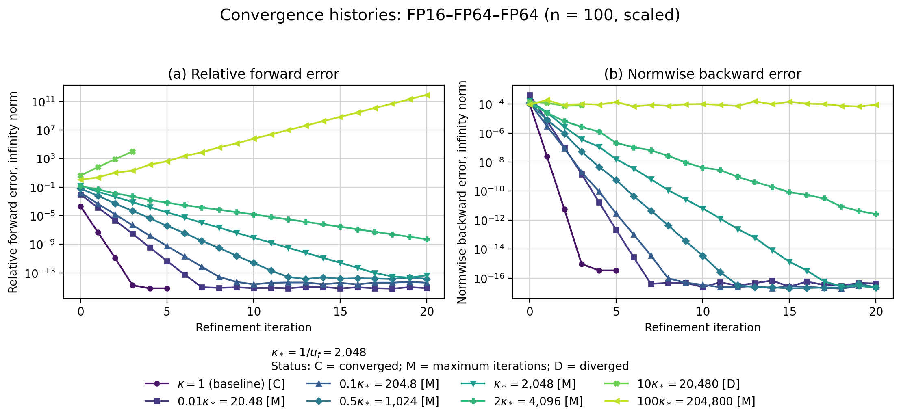
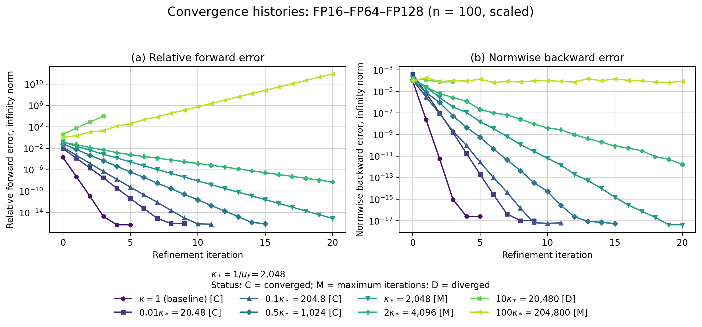
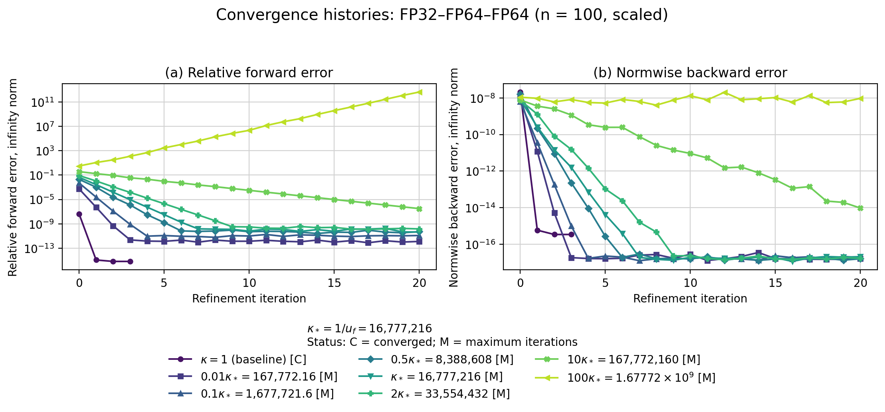
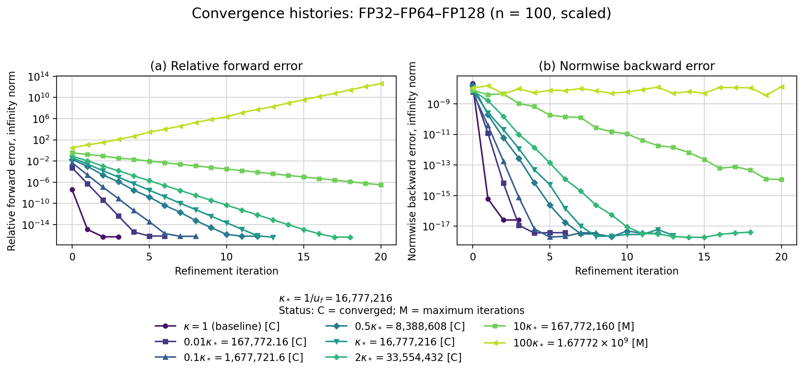
Interpretation
Across all four displayed triples, convergence slows as the condition number increases. Runs well below \(\kappa_*\) converge rapidly; runs near \(\kappa_*\) require more iterations, while runs sufficiently far above it reach the iteration limit or diverge. The transition occurs at different multiples of \(\kappa_*\), consistent with \(\kappa_*=u_f^{-1}\) being an approximate reference rather than a fixed convergence boundary.
The \(2\times2\) design separates the roles of the two precisions: \(u_f\) primarily determines the convergence rate and practical convergence region, whereas \(u_r\) primarily determines the attainable forward accuracy. The following subsections examine these effects and summarize the omitted FP8 and bfloat16 configurations.
Effect of residual precision
At each factorization precision, the FP64- and FP128-residual histories are initially nearly identical and separate only at the FP64 accuracy floor. Thus, \(u_r\) primarily controls attainable accuracy, not the initial convergence rate.
With FP64 residuals, \(u_r=u\), and the forward error reaches a condition-dependent plateau. For FP16 factorization, runs from \(0.01\kappa_*\) through \(\kappa_*\) stagnate between \(10^{-15}\) and \(10^{-14}\) and reach the iteration limit. For FP32, the larger absolute condition numbers produce clearer plateaus, rising from approximately \(10^{-12}\) at \(0.01\kappa_*\) to \(10^{-10}\) at \(2\kappa_*\). The backward errors still approach working-precision accuracy. This agrees with the expected forward-error limit \(O(\operatorname{cond}(A,x)u)\).
FP128 residuals reduce these plateaus. For FP16, runs through \(0.5\kappa_*\) converge with forward errors of order \(10^{-16}\); at \(\kappa_*\), the error reaches approximately \(8\times10^{-16}\) without satisfying the stopping criterion within 20 iterations. For FP32, all runs through \(2\kappa_*\) converge with errors between \(4\times10^{-17}\) and \(7\times10^{-17}\). Backward errors are also lower, and more runs converge.
Once factorization limits convergence, both residual precisions produce nearly identical histories: from \(2\kappa_*\) upward for FP16 and \(10\kappa_*\) upward for FP32. Higher residual precision therefore improves stable runs but cannot prevent factorization-induced instability. Since HDNUM FP128 does not nominally satisfy \(u_r=u^2\), these results demonstrate the benefit of \(u_r<u\), but not the sufficient theoretical case \(u_r=u^2\).
Factorization precision and convergence scale
At fixed residual precision, increasing factorization precision shifts convergence to larger absolute condition numbers. The reference values are
\[ \kappa_*^{\mathrm{FP16}}=2^{11}=2{,}048, \qquad \kappa_*^{\mathrm{FP32}}=2^{24}=16{,}777{,}216, \]
At comparable \(\kappa/\kappa_*\), both formats converge rapidly below \(\kappa_*\), more slowly near it, and slowly or not at all sufficiently far above it. With FP128 residuals, FP16 converges through \(0.5\kappa_*\) and FP32 through \(2\kappa_*\). This is consistent with \(\kappa_*\) being an approximate reference rather than a fixed boundary.
Alternative low-precision factorization formats
The bfloat16 and FP8 configurations were omitted to preserve the complete \(2\times2\) FP16/FP32 design. They examine distinct low-precision formats and do not form a controlled pair.
Bfloat16 has lower significand precision than FP16 but a larger exponent range. It converges through \(0.1\kappa_*\) but not from \(0.5\kappa_*\) upward; divergence is detected at \(10\kappa_*\). On the normalized grid, it converges more slowly than FP16. Its larger range provides no significant advantage here because residual scaling prevents underflow for FP16.
FP8 is an extreme stress case. It converges at \(\kappa=1\) and \(0.1\kappa_*\) in 10 and 17 steps, respectively, but reaches the iteration limit from \(0.5\kappa_*\) through \(10\kappa_*\). At \(100\kappa_*\), conversion to FP8 produces non-finite input and factorization stops before refinement. These results expose the limitations of very low factorization precision but are secondary to the isolated \(u_f\) and \(u_r\) comparisons.
13.2 Condition-number sweep
This experiment uses a dense logarithmic sweep to map final accuracy and iteration count over a broad condition-number range. For each factorization format, \(\kappa_2(A)\) ranges from \(1\) to approximately \(10\kappa_*\), where \(\kappa_*=u_f^{-1}\). The working and residual precisions remain fixed at FP64 and FP128. The upper panels show the final relative forward error; the lower panels show completed refinement updates. Dashed lines mark \(\kappa_*\), dotted lines mark \(u\) and the 20-update limit, and marker shapes indicate termination status.
Three configurations are shown: bfloat16-FP64-FP128, FP16-FP64-FP128, and FP32-FP64-FP128. Fixing \(u\) and \(u_r\) isolates the effect of factorization precision. The FP8 configuration is omitted as an extreme stress case and summarized below. The FP64-residual configurations are also omitted because their main effect was examined in the preceding experiment group.
The results are shown in Figure 13.2.
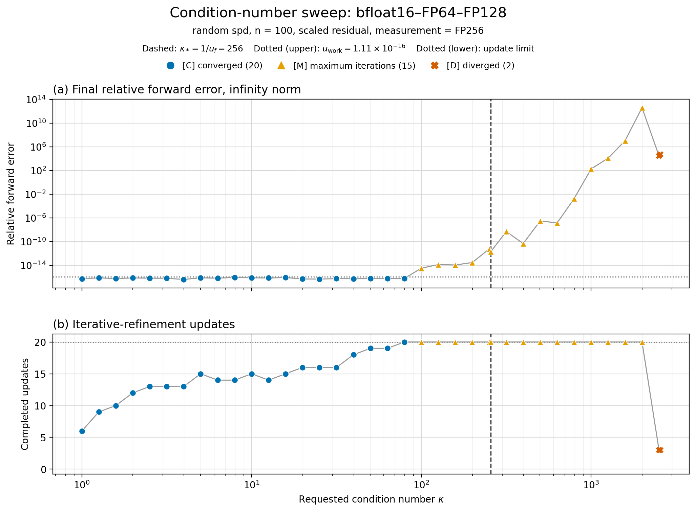
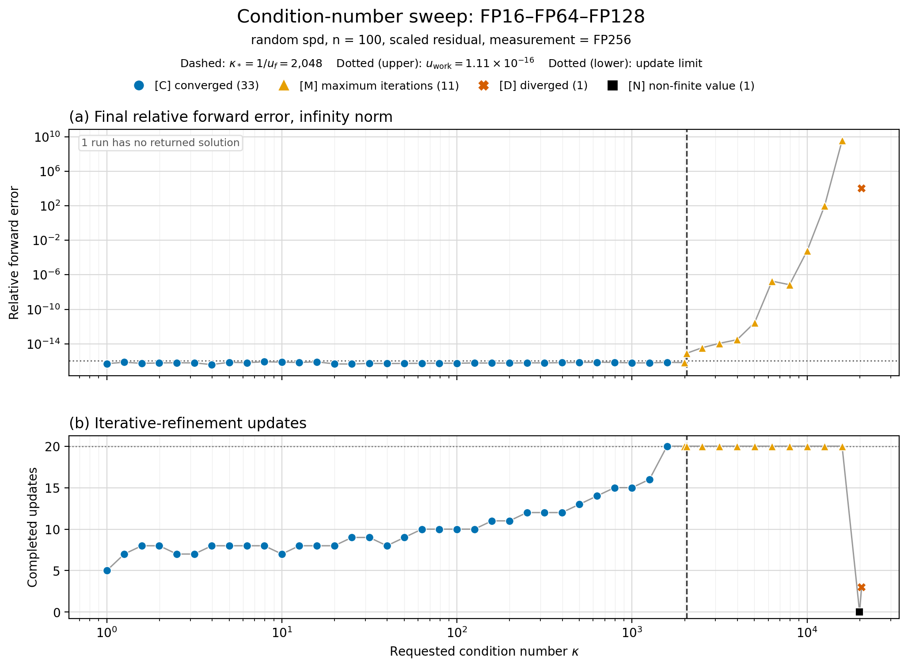
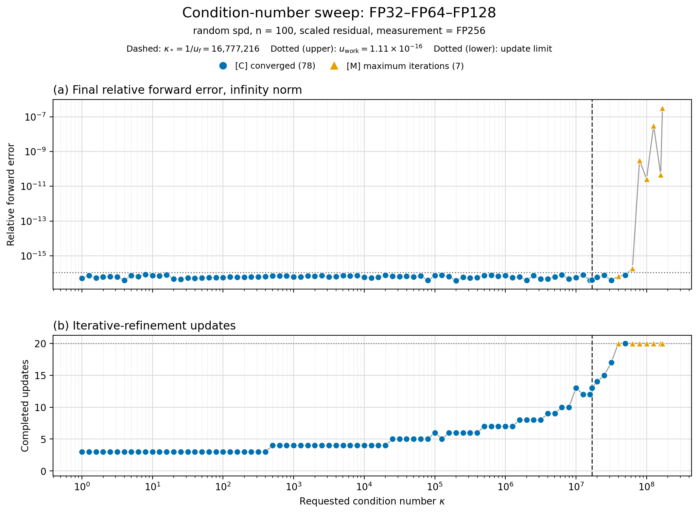
Interpretation
Across the three sweeps, increasing \(\kappa_2(A)\) generally increases the required updates. The status totals are \(20\) converged, \(15\) maximum-iteration, and \(2\) diverged runs for bfloat16; \(33\) converged, \(11\) maximum-iteration, \(1\) diverged, and \(1\) non-finite run for FP16; and \(78\) converged and \(7\) maximum-iteration runs for FP32. Since the grids contain different numbers of points, these totals describe each sweep but are not directly comparable success rates. Converged runs retain forward errors near working precision until the practical convergence limit is approached.
Conditioning and practical convergence region
Within each format, well-conditioned systems converge in few updates, while the update count rises toward the transition region. The first maximum-iteration runs occur at approximately \(0.39\kappa_*\) for bfloat16, \(0.97\kappa_*\) for FP16, and \(2.37\kappa_*\) for FP32. The largest converged values are \(0.31\kappa_*\), \(0.77\kappa_*\), and \(2.99\kappa_*\), respectively. Thus, higher factorization precision expands the practical convergence region on both absolute and normalized scales in these tests.
This trend is consistent with the theoretical convergence factor being of order \(u_f\kappa(A)\), but \(\kappa_*=u_f^{-1}\) is only an approximate scale. LU growth, factorization quality, componentwise conditioning, and norm-dependent constants also affect convergence. The normalized transition therefore need not occur at \(\kappa/\kappa_*=1\) or remain fixed across formats.
Final forward accuracy
Converged runs generally attain forward errors of order \(u\). Increasing \(\kappa_2(A)\) mainly raises the update count; final accuracy remains near working precision while refinement succeeds. The FP128 residual therefore avoids the condition-dependent floor observed with FP64 residuals.
Near the transition, some runs retain small errors but reach the 20-update limit because termination depends on the relative correction, not the forward error. Beyond this region, errors increase or become irregular.
Omitted configurations
FP8–FP64–FP128 is omitted as an extreme stress case: only 3 of 25 runs converge, up to approximately \(0.10\kappa_*\). The FP16–FP64–FP64 and FP32–FP64–FP64 sweeps mainly reproduce the condition-dependent accuracy floor observed in the preceding experiment group. Only three runs in each sweep converge; most reach the 20-update limit because the correction criterion remains unsatisfied. The residual-precision experiment examines this effect directly.
13.3 Residual-precision comparison
This experiment isolates the effect of residual precision. The factorization and working precisions are fixed at FP32 and FP64, while the residual precision is varied between FP64 and FP128. Both configurations use the same matrices, right-hand sides, condition-number grid, and algorithmic settings. Residual scaling is enabled, and errors are evaluated in FP256.
The upper panel shows the final normwise backward error; the lower panel shows the final relative forward error. The dashed line marks \(\kappa_*=u_f^{-1}\), while the dotted lines mark \(u\) and the reference \(\kappa_2(A)u\). Marker shapes indicate termination status.
The results are shown in Figure 13.3.
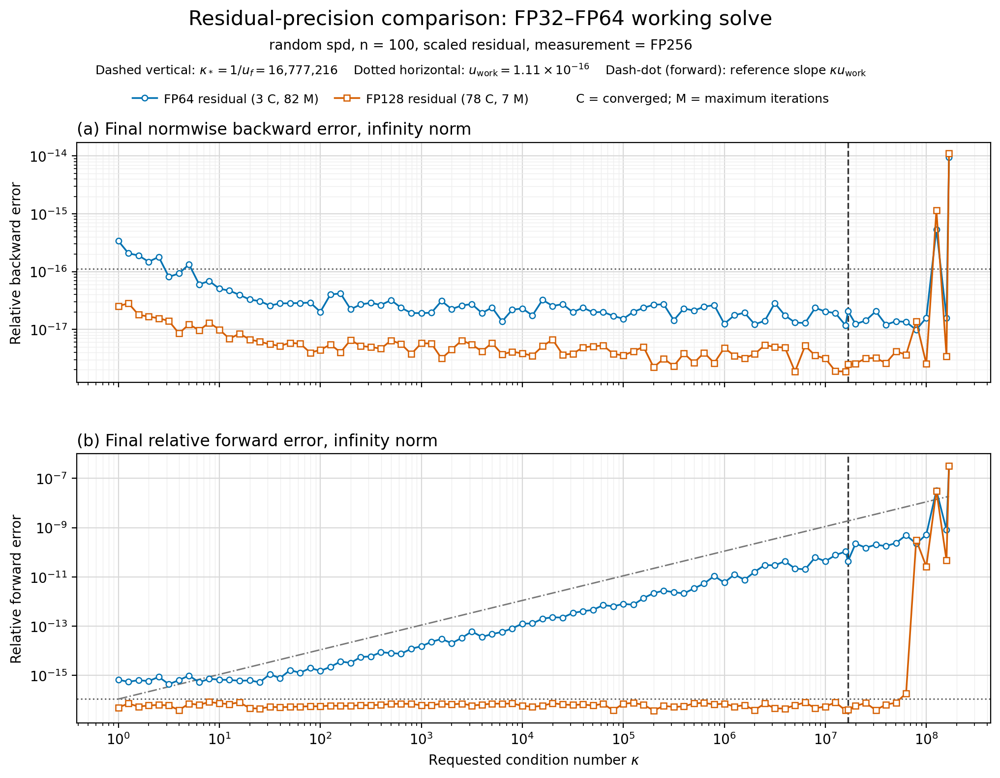
Interpretation
Across the stable range, both configurations attain backward errors of order \(u\). Their forward errors separate as \(\kappa_2(A)\) increases: with FP64 residuals, the error grows approximately in proportion to \(\kappa_2(A)\), whereas with FP128 residuals it remains near working precision. Beyond the factorization convergence region, both variants become irregular.
Backward error
Over the stable range \(10^2\leq\kappa_2(A)\leq10^7\), both backward-error curves are nearly independent of conditioning. FP64 residuals give errors between \(1.2\times10^{-17}\) and \(4.2\times10^{-17}\), while FP128 residuals give approximately \(1.9\times10^{-18}\) to \(6.7\times10^{-18}\). Both remain of order \(u\).
FP128 residuals lower the observed values but do not change their theoretical order. This agrees with Carson and Higham (2018, Corollary 4.2), which predicts a limiting normwise backward error of order \(u\), essentially independent of \(u_r\). Values below \(u\) do not contradict this result, since the estimate specifies an order rather than a lower bound.
Forward error and residual precision
Over the stable range \(10^2\leq\kappa_2(A)\leq10^7\), FP64 residuals produce forward errors from approximately \(1.5\times10^{-15}\) to \(4.3\times10^{-11}\). Their log–log slope is \(0.90\), close to the predicted linear dependence on conditioning. With FP128 residuals, the error remains between approximately \(3.8\times10^{-17}\) and \(8.1\times10^{-17}\), with no systematic dependence on \(\kappa_2(A)\) and near working precision.
This agrees with the limiting bound
\[ \frac{\lVert \widehat{x}-x\rVert_\infty}{\lVert x\rVert_\infty} \lesssim u+4pu_r\operatorname{cond}(A,x) \]
of Carson and Higham (2018, Corollary 3.3). When \(u_r=u\), the condition-dependent term gives an error of order \(\operatorname{cond}(A,x)u\). With sufficiently accurate residuals, this term becomes negligible and the limiting error is of order \(u\).
Only 3 of the 85 FP64-residual runs satisfy the stopping criterion; the remaining 82 reach the update limit. This mainly reflects the condition-dependent correction floor remaining above the \(u\)-based tolerance, even after the forward error reaches its expected level. With FP128 residuals, 78 runs converge and 7 reach the update limit. Beyond the FP32 factorization convergence region, however, both variants become irregular. Higher residual precision improves attainable accuracy but cannot compensate for an insufficiently accurate factorization.
13.4 Direct-solve comparison
This experiment compares mixed-precision iterative refinement with a direct solve. Iterative refinement uses FP32 factorization, FP64 working, and FP128 residual precision, with residual scaling enabled. The direct method performs a single LU factorization and solve in FP64. Both methods use the same matrices, right-hand sides, and condition-number grid. Errors are evaluated in FP256.
The upper panel shows the final relative forward error; the lower panel shows the final normwise backward error. The dashed line marks \(\kappa_*=u_f^{-1}\), while the dotted lines mark \(u\) and the reference \(\kappa_2(A)u_{\mathrm{direct}}\). Marker shapes indicate the termination status of iterative refinement.
The results are shown in Figure 13.4.
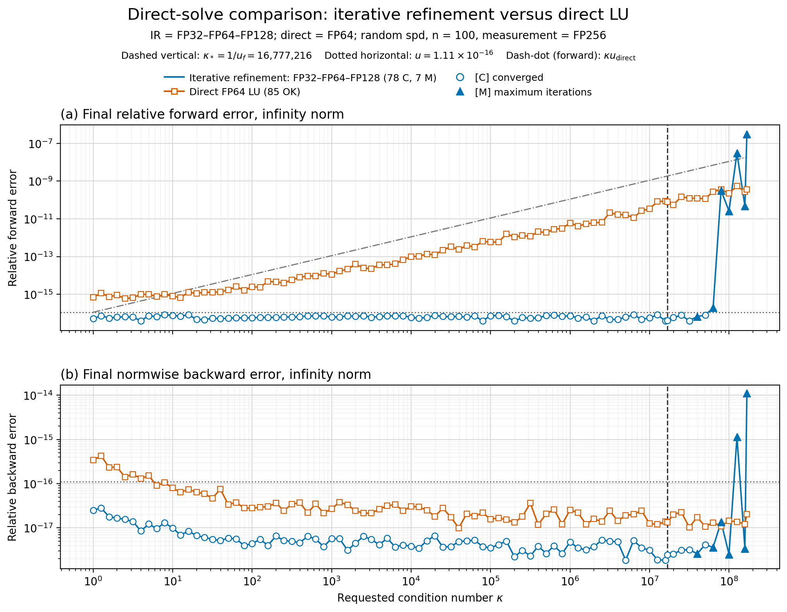
Interpretation
Within its convergence region, iterative refinement attains forward and backward errors near working precision. The direct FP64 solve remains backward stable across the full condition-number range, but its forward error increases with conditioning. Beyond the FP32 factorization limit, iterative refinement becomes irregular and loses its accuracy advantage.
Forward error and convergence region
Over the stable range \(10^2\leq\kappa_2(A)\leq10^7\), the IR forward error remains near working precision, between \(3.8\times10^{-17}\) and \(8.1\times10^{-17}\), with no systematic dependence on \(\kappa_2(A)\). In contrast, the direct-LU error increases from \(2.5\times10^{-15}\) to \(3.4\times10^{-11}\). Its fitted log–log slope is \(0.82\), broadly consistent with the expected \(O(\kappa_2(A)u)\) behavior.
Of the 85 IR runs, 78 converge and 7 reach the maximum of 20 updates. The first maximum-iteration result occurs at \(\kappa_2(A)\approx3.98\times10^7\), while the largest converged result occurs at approximately \(5.01\times10^7\). The transition is therefore not a strict condition-number boundary.
Beyond this region, the IR errors become irregular and can exceed those of the direct solve. Accurate residuals and FP64 updates improve the solution only while the FP32 factors provide sufficiently accurate correction equations. The direct FP64 solve therefore becomes more reliable once the low-precision factorization limits IR convergence.
Backward error
Over the stable range \(10^2\leq\kappa_2(A)\leq10^7\), both methods attain backward errors of order \(u\), with little dependence on conditioning. The IR error lies between \(1.9\times10^{-18}\) and \(6.7\times10^{-18}\), while the direct-LU error lies mostly between \(1.0\times10^{-17}\) and \(3.8\times10^{-17}\). IR therefore gives consistently smaller observed errors, although both methods are backward stable.
The direct solve nevertheless exhibits condition-dependent forward error. A small backward error guarantees proximity to a nearby problem, but ill-conditioning can amplify this perturbation into a much larger forward error.
13.5 Low-precision limitations and residual scaling
For the FP16–FP64–FP128 configuration, the initial convergence histories showed forward and backward errors stagnating well above the expected FP64 accuracy. We attributed this to information loss when the shrinking FP128 residual was converted to FP16 before the correction solve.
The smallest positive normal and subnormal FP16 values are \(2^{-14}\approx6.10\times10^{-5}\) and \(2^{-24}\approx5.96\times10^{-8}\), respectively. Under round-to-nearest, magnitudes below approximately \(2^{-25}\approx2.98\times10^{-8}\) round to zero. Moreover, subnormal numbers have constant absolute spacing \(2^{-24}\) and therefore increasingly poor relative resolution near zero. Residual conversion can consequently lose information both through rounding to zero and through severe quantization of surviving subnormal components.
To test this hypothesis, we instrumented the residual conversion at each iteration. The diagnostics record the residual infinity norm, its smallest nonzero component, the number of nonzero components before conversion, and how many become zero when converted to FP16. This allows conversion loss to be compared directly with the observed stagnation.
To reduce this loss, we normalize the residual before its conversion to FP16:
\[ \theta_k=\lVert r_k\rVert_\infty, \qquad \widehat r_k=\frac{r_k}{\theta_k}, \qquad A\widehat d_k=\widehat r_k, \qquad d_k=\theta_k\widehat d_k. \]
This is equivalent to the original correction equation in exact arithmetic, since \(Ad_k=\theta_kA\widehat d_k=\theta_k\widehat r_k=r_k\). Scaling therefore leaves the mathematical correction unchanged while using the FP16 range and resolution more effectively. The factor \(\theta_k\) is reapplied after the low-precision solve in FP64.
The experiment compares scaled and unscaled refinement for \(n=100\) and \(\kappa_2(A)=500\), using the same matrix, right-hand side, and algorithmic settings. Residual scaling is the only varied option. In Figure 13.5, the conversion diagnostics show the residual magnitudes and components lost during conversion, while the convergence histories show the corresponding forward errors, backward errors, and relative corrections.
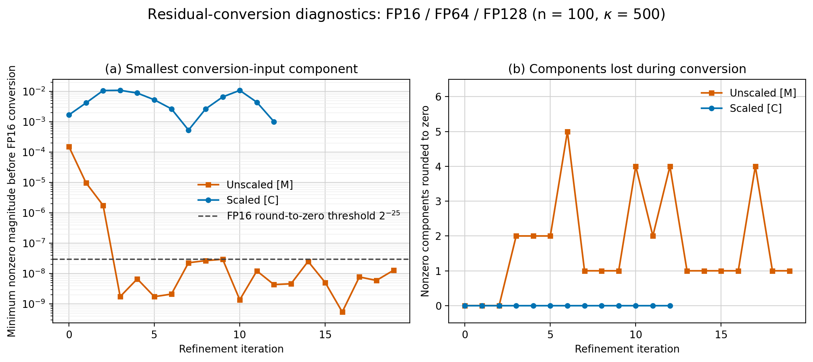
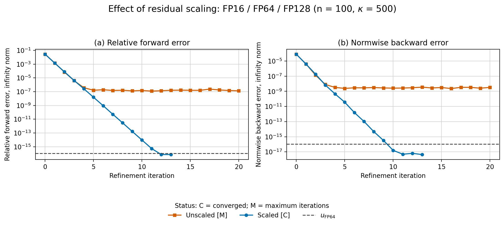
Interpretation
The diagnostics confirm that information loss during unscaled FP16 residual conversion coincides with the onset of stagnation. Residual scaling eliminates the observed conversion loss, allowing the corrections and errors to continue decreasing until the method converges at FP64-level accuracy.
Residual-conversion diagnostics
In the unscaled run, the first conversion loss occurs at iteration 3, when the smallest residual component falls to \(1.74\times10^{-9}\) and two components round to zero. From iterations 3–19, all 100 components remain nonzero before conversion, but between one and five components per iteration become zero in FP16.
These counts measure only complete underflow to zero. They do not capture the additional information loss caused by distinct subnormal components being mapped to the same values on the coarse FP16 grid. The small number of zeroed components therefore understates the total effect of conversion.
With scaling, the smallest normalized components remain approximately between \(5\times10^{-4}\) and \(10^{-2}\), above the smallest FP16 normal value. Consequently, no component rounds to zero during any of the 13 updates, and the normalized residual avoids severe subnormal quantization.
Effect on convergence
Without scaling, the forward error stagnates between approximately \(1.2\times10^{-7}\) and \(2.3\times10^{-7}\), while the backward error remains between \(2.3\times10^{-9}\) and \(3.5\times10^{-9}\). The relative correction similarly plateaus near \(2\times10^{-7}\), and the run reaches the maximum of 20 updates without converging.
With scaling, all three quantities continue decreasing. The method converges after 13 updates with final forward error \(7.25\times10^{-17}\), backward error \(4.44\times10^{-18}\), and relative correction \(5.57\times10^{-17}\). Residual scaling therefore removes the observed stagnation and restores FP64-level accuracy.
This remedy specifically addresses underflow and quantization when the residual is converted to FP16. It does not prevent overflow when the matrix or right-hand side is converted to FP16, nor does it extend the convergence range imposed by the accuracy of the FP16 factorization.
13.6 Conclusion
The experiments broadly confirm the expected behavior of three-precision iterative refinement. Within the convergence region determined by the low-precision factorization, refinement attains FP64-level backward accuracy. Residual precision determines the attainable forward accuracy: with FP64 residuals, where \(u_r=u\), the forward error grows with conditioning, whereas FP128 residuals keep it near working precision throughout the stable range.
Compared with a direct FP64 LU solve, iterative refinement produces substantially smaller forward errors as conditioning increases, but becomes unreliable once the FP32 or FP16 factors no longer provide accurate correction equations. The FP16 scaling experiments further show that limited exponent range can cause residual-conversion loss and stagnation; infinity-norm scaling prevents this loss and restores convergence without changing the mathematical correction.
The observed convergence in relatively few updates supports the potential of mixed-precision refinement to reduce computational cost on hardware with efficient low-precision arithmetic. Since the formats used here were partly software-emulated and execution times were not measured, performance gains remain to be evaluated experimentally on suitable hardware.
The experiments were implemented within a configurable framework that supports further studies with different precision combinations, test problems, condition-number ranges, and algorithmic options.